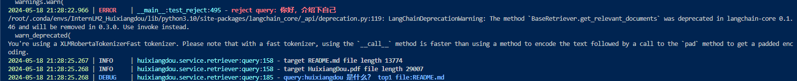
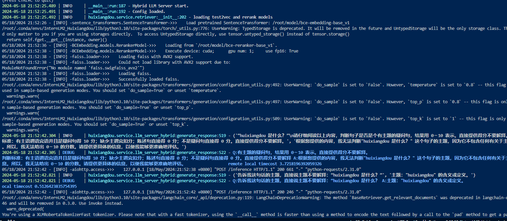
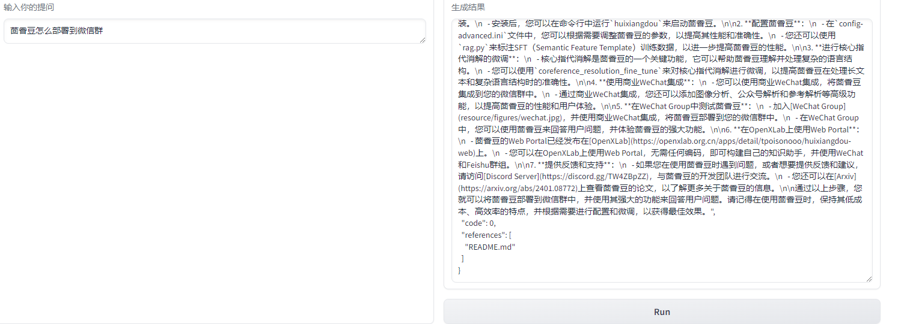

大模型实战营-初夏营-第三次课笔记
这是大模型实战营-初夏营第三次课的笔记
前言
早就听闻茴香豆——“豆哥”的鼎鼎大名，现在借着初夏营这个机会体验一把，所以先把这个作业做了
环境配置
conda 虚拟环境配置
与第一期实战营不同，本期实战营在Intern Studio上提供了非常方便的环境配置命令，仅需运行
1 | studio-conda -o internlm-base -t InternLM2_Huixiangdou |
即可一键配置运行豆哥所需的环境
在此基础之上，我们还需要安装一些python包:
1 | # 安装 python 依赖 |
激活环境之后可以运行下面的命令清理配置环境过程中的缓存：
1 | pip cache purge |
其中第二条命令清理出了12GB还多的空闲空间(也有可能是之前的东西太多没清理哈哈)：
下载所需模型和仓库
- bce-embedding，bce-reranker和InternLM-2模型
Intern Studio上已经准备好了上述模型的权重，只需建立软链接即可
1 | cd /root && mkdir model |
- clone 源码并checkout到课程对应分支
1 | cd /root |
修改模型路径
我们还需要修改HuiXiangDou/config.ini中的模型路径，文档是利用sed命令直接在命令行修改的，这些命令的详细解释可以参考九月大佬的笔记。还可以直接用VScode
SSH连接远程主机，直接在GUI上修改成下面这样也行：
1 | # L6 |
构建语料库
- 知识库语料
我们的目标是用豆哥做一个基于豆哥文档的RAG助手，主要用于解答用户关于豆哥的问题。首先需要从github上再次下载豆哥的源码作为语料：
1 | cd /root/huixiangdou && mkdir repodir |
- 接受，拒答问题语料：
除了语料知识的向量数据库，茴香豆建立接受和拒答两个向量数据库，用来在检索的过程中更加精确的判断提问的相关性，我们需要建立这两个语料库:
- 接受问题语料，即希望茴香豆助手回答的示例问题
存储在 HuiXiangDou/resource/good_questions.json 中，我们需要将原有的文件备份起来，生成一份新的语料，新语料和豆哥文档相关性更强
1 | cd /root/huixiangdou |
- 拒绝问题语料，即希望茴香豆助手拒答的示例问题
存储在HuiXiangDou/resource/bad_questions.json 中，
其中多为技术无关的主题或闲聊。我们无需改动这些语料
- 测试问题
存储在HuiXiangDou/test_queries.json中，用于测试拒答效果
1 | cd /root/huixiangdou |
- 建立向量数据库并测试
运行以下命令建立向量数据库并使用测试问题测试
1 | python3 -m huixiangdou.service.feature_store --sample ./test_queries.json |
从命令行输出可以看到，豆哥接受第一个问题并且给出了最可能包含答案的文档README.md而且豆哥拒绝回答第二个问题：

运行豆哥
修改一下main.py中的测试query:
1 | sed -i '74s/.*/ queries = ["huixiangdou 是什么？", "茴香豆怎么部署到微信群", "今天天气怎么样？"]/' /root/huixiangdou/huixiangdou/main.py |
然后直接运行
1 | python3 -m huixiangdou.main --standalone |
效果如下

可以看到，豆哥的回答过程主要包括三个部分
问题打分：基于一定规则利用大模型给用户的问题打分（0~10分）低于一定阈值会直接拒答；看了一下技术报告和源码，大模型打分之前还会通过用户问题与示例问题进行余弦相似度计算进行一次打分，如果所有示例问题打分均低于配置文件中的
reject_throttle, 则直接拒答；问题主题提取：利用大模型提取问题主题，与技术不相关的主题（如天气）会被拒答；
检索并回答，就是RAG的通用pipeline了
gradio网页demo搭建
首先安装gradio依赖：
1 | pip install gradio==4.25.0 redis==5.0.3 flask==3.0.2 lark_oapi==1.2.4 |
gradio, 启动!
1 | cd /root/HuiXiangDou |
可以使用VSCode的Port页面直接将远端7860端口映射到本地，之后直接访问http://127.0.0.1:7860即可进入页面
提问：茴香豆怎么部署到微信群？
回答：
